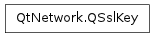

QSslKey ¶

Synopsis ¶
Detailed Description ¶
The PySide.QtNetwork.QSslKey class provides an interface for private and public keys.
PySide.QtNetwork.QSslKey provides a simple API for managing keys.
- class PySide.QtNetwork. QSslKey ¶
- class PySide.QtNetwork. QSslKey ( device , algorithm [ , format=QSsl.Pem [ , type=QSsl.PrivateKey [ , passPhrase=QByteArray() ] ] ] )
- class PySide.QtNetwork. QSslKey ( encoded , algorithm [ , format=QSsl.Pem [ , type=QSsl.PrivateKey [ , passPhrase=QByteArray() ] ] ] )
- class PySide.QtNetwork. QSslKey ( other )
-
Parameters: - algorithm – PySide.QtNetwork.QSsl.KeyAlgorithm
- encoded – PySide.QtCore.QByteArray
- format – PySide.QtNetwork.QSsl.EncodingFormat
- device – PySide.QtCore.QIODevice
- other – PySide.QtNetwork.QSslKey
- type – PySide.QtNetwork.QSsl.KeyType
- passPhrase – PySide.QtCore.QByteArray
Constructs a null key.
See also
Constructs an identical copy of other .
- PySide.QtNetwork.QSslKey. algorithm ( ) ¶
-
Return type: PySide.QtNetwork.QSsl.KeyAlgorithm Returns the key algorithm.
- PySide.QtNetwork.QSslKey. clear ( ) ¶
-
Clears the contents of this key, making it a null key.
See also
- PySide.QtNetwork.QSslKey. handle ( ) ¶
-
Return type: PySide.QtCore.Qt::HANDLE Returns a pointer to the native key handle, if it is available; otherwise a null pointer is returned.
You can use this handle together with the native API to access extended information about the key.
Warning
Use of this function has a high probability of being non-portable, and its return value may vary across platforms, and between minor Qt releases.
- PySide.QtNetwork.QSslKey. isNull ( ) ¶
-
Return type: PySide.QtCore.bool Returns true if this is a null key; otherwise false.
See also
- PySide.QtNetwork.QSslKey. length ( ) ¶
-
Return type: PySide.QtCore.int Returns the length of the key in bits, or -1 if the key is null.
- PySide.QtNetwork.QSslKey. __ne__ ( key ) ¶
-
Parameters: key – PySide.QtNetwork.QSslKey Return type: PySide.QtCore.bool Returns true if this key is not equal to key other ; otherwise returns false.
- PySide.QtNetwork.QSslKey. __eq__ ( key ) ¶
-
Parameters: key – PySide.QtNetwork.QSslKey Return type: PySide.QtCore.bool Returns true if this key is equal to other ; otherwise returns false.
- PySide.QtNetwork.QSslKey. toDer ( [ passPhrase=QByteArray() ] ) ¶
-
Parameters: passPhrase – PySide.QtCore.QByteArray Return type: PySide.QtCore.QByteArray Returns the key in DER encoding. The result is encrypted with passPhrase if the key is a private key and passPhrase is non-empty.
- PySide.QtNetwork.QSslKey. toPem ( [ passPhrase=QByteArray() ] ) ¶
-
Parameters: passPhrase – PySide.QtCore.QByteArray Return type: PySide.QtCore.QByteArray Returns the key in PEM encoding. The result is encrypted with passPhrase if the key is a private key and passPhrase is non-empty.
- PySide.QtNetwork.QSslKey. type ( ) ¶
-
Return type: PySide.QtNetwork.QSsl.KeyType Returns the type of the key (i.e., PublicKey or PrivateKey).